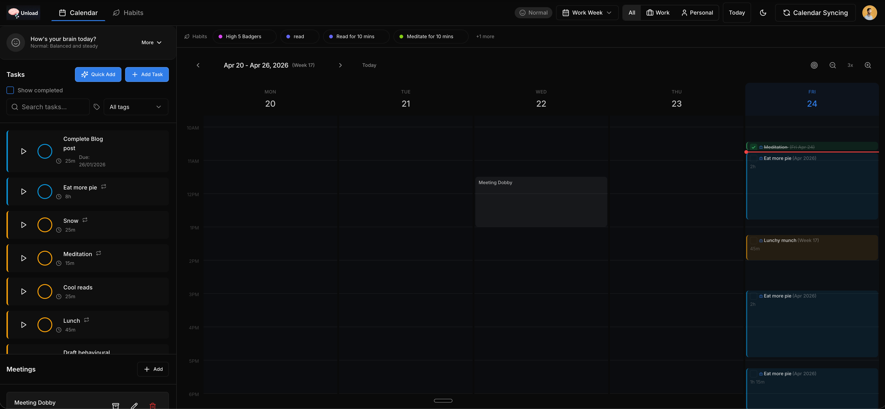
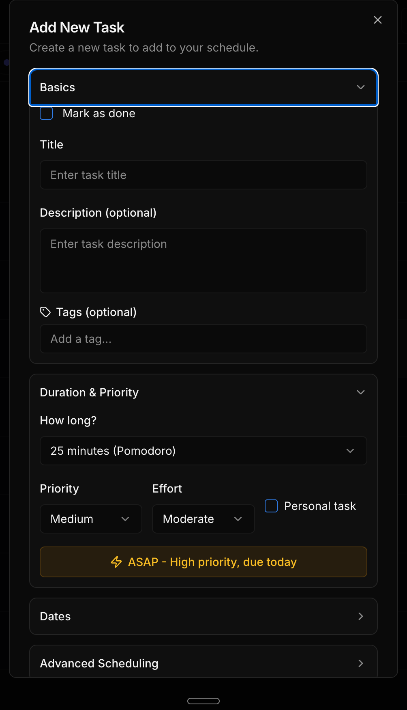
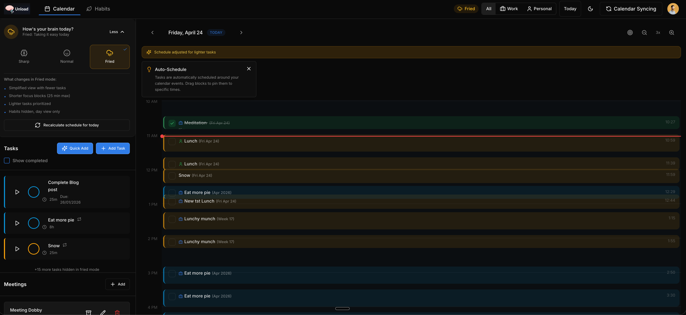

Live Project · Side Project
A better to-do app, built for how human brains actually work.
After years of trying every to-do app going — and every one of them eventually failing me — I decided to just build the thing I actually wanted.
The problem isn't that people don't know how to manage their tasks. The problem is that most to-do apps were built by engineers for engineers. They assume you think in linear patterns. You don't. Most people don't. You have a messy brain full of overlapping priorities, shifting energy levels, calendar commitments, and the lingering guilt of tasks you haven't touched in three weeks.
What I actually wanted was something that would show me my tasks mapped visually against my real day — my meetings, my blocks of time, the gaps where I could actually get things done. Not a list. A view of reality.
"To-do lists were made for people who think in straight lines. Most of us don't."
I also noticed something I called the decay loop: when life gets intense and you stop using an app for a few days, the list goes stale. And a stale list is intimidating. So you avoid it. And the longer you avoid it, the staler it gets. Most apps have no answer to this. They just wait for you to come back and feel bad.
Then there was the brain thing. My background is in behavioural science, and one of the most obvious and underserved truths about how people work is that your cognitive capacity genuinely varies — day to day, hour to hour. Some days your brain is firing on all cylinders. Some days it really isn't. Apps that ignore this are setting people up to fail. People with certain health conditions experience this more dramatically, but honestly it's true for everyone: a bad night's sleep, a rough morning, a difficult meeting — these things change what you're capable of.
So I built in a way to account for it. And then I kept going, because once you start building something that actually fits the way you think, it's hard to stop.
Tasks mapped against your real day. Not a list — a view of what's actually possible.

Day view — your tasks scheduled around your actual calendar

Quick-add — just tell it what's on your mind

Brain Mode — adjust for how you're actually feeling today
A few things that make it different from every other to-do app you've tried.
Drop tasks in. Unload figures out when they fit around your real calendar — meetings, fixed commitments, the lot. Long tasks get split across days automatically.
Not every day feels the same. Tell Unload how your brain is operating today and it adjusts your schedule accordingly — lighter tasks when your capacity is low, harder ones when you're sharp.
Just type or speak what's on your mind. Unload uses AI to parse the chaos into structured tasks — with sensible estimates, priorities, and due dates.
Work stays in work hours. Personal time stays protected. Unload knows the difference and schedules accordingly — without you having to think about it.
Didn't get to something? It doesn't disappear or stay stuck in yesterday. Unload recalculates and reschedules — automatically, every time you open it.
Build small habits without the pressure of streak mechanics or shame. Unload tracks them quietly and reminds you gently — it's support, not surveillance.
Unload is a working app — not a concept, not a demo. Sign up and use it.
Open Unload →Built with React · Node.js · PostgreSQL · OpenAI